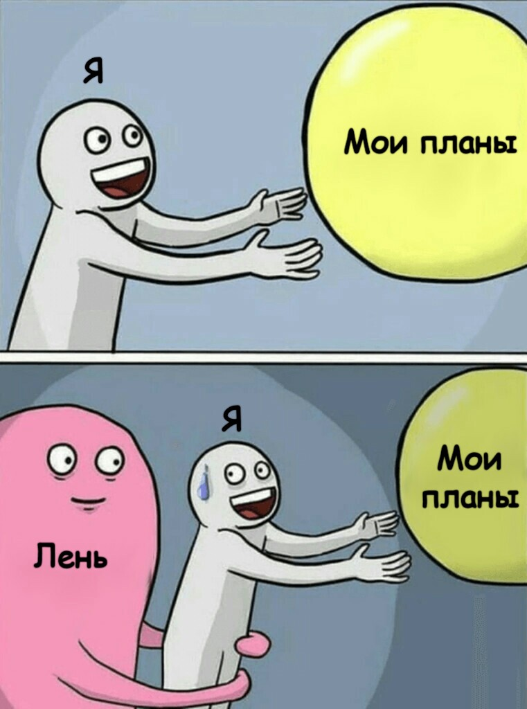

Наступает прекрасная летняя пора. Наконец-то можно отложить учебники, ну а
в нашем случае, скорее, ноутбук подальше и хорошо отдохнуть…
Тем не менее для каждого из нас, лето - это время, которое нужно провести с пользой.
Как часто вы замечали себя за обещанием “Ой, сейчас нет времени, сделаю
все летом!” или “С завтрашнего дня начну ✯новую✯ жизнь!”.
Что же лето - это как раз время, для того чтобы выполнить эти обещания.
Если не хотите жалеть потраченного зря времени, то пора сделать первый шаг!
Перед каждым из нас стоит дилемма: или посвятить себя саморазвитию,
подготовке к экзаменам и т.д. или поспать до 12:00, а потом можно и с
друзьями погулять, или просмотреть ленту в Instagram, рекомендации в Tik
Tok. Тем не менее бесцельное просматривание социальных сетей, не только не
развивает нас, но и плохо влияет на нас. Поэтому пора достигать новых
вершин, и осуществлять свои заветные мечты.
Вы в будущем скажете себе “Спасибо!” за то, что вовремя забыли про отмазку “Мне лень!”
Стоп. А что такое лень?
Лень - это “отсутствие желания действовать, трудиться,
склонность к безделью.”
(по толковому словарю Ожегова).
Не стоит путать лень с различными заболеваниями. Лучше проконсультируйтесь с врачом при
наличии симптомов перечисленных
здесь.
Ну а если это просто защитный механизм организма, то воспользуйтесь следующими советами.
Итак, встречайте советы для победы над ЛЕНЬЮ!

Как можно победить лень ленью?
Запомните, отдых - это не лень.
Отдых-это время для восстановления сил после работы, а не бесцельное оттягивание начала дел.
Если вы будете вовремя отдыхать, ваш организм будет полон энергии и вы не станете
валяться в кровати целый день.

Планируйте свой день так, чтобы вы не переутомились. Правильный распорядок дня позволит вам успевать все, не вредя своему здоровью. В скором времени у вас возникнет привычка следовать своему списку дел, и вы перестанете лениться. Также структуризация помогает психологически облегчить задачу, тем самым даря небольшую мотивацию. И конечно, умея правильно организовывать свой день вы не только поборите лень (конечно не на 100%, но на 80% точно), но и сможете наслаждаться жизнью, имея достаточное количество свободного времени на хобби, сон и просто на жизнь.

Занятие спортом и изменение питания могут помочь при борьбе с ленью.
Спорт-это зарядка организма энергией и выработка дофамина. После занятий спортом,
человек становится счастливее и готов заняться работой. Физическая активность
ведет к стимуляции многих органов и тканей организма, а также к увеличению притока
крови к мозгу.
В головном мозге тренирующегося человека происходит увеличение
серого вещества в передней поясной коре, которая отвечает за регулирование кровеносного
давления, сердечного ритма, а также участвует в выполнении его когнитивных функций,
таких как мотивация, принятие решений, эмпатия и многое другое.
Вот так спорт
помогает вам замотивировать себя и начать что-то делать.
Возможно вашему организму не хватает витаминов. Например, постоянная сонливость и
усталость могут быть следствием нехватки витаминов группы В, витамина С и Д, йода,
железа. Все эти витамины и минералы напрямую связаны с работоспособностью человека.
Но не спешите покупать различные БАДы! Лучше проконсультируйтесь с врачом и
пересмотрите питание!